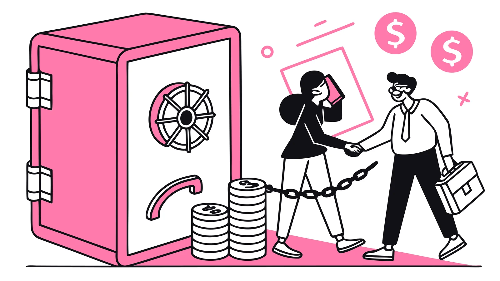

Nativness: trust-first affiliate marketplace with escrowed commissions

TL;DR
- Problem
- Affiliates promote offers on a promise, and advertisers can pay late or not at all. Trust is the bottleneck of affiliate marketing.
- My role
- Scoped the product through locked decision tables, wrote the design specs, set the brand system and built the prototype.
- Team
- Solo, with AI.
- Outcome
- A live prototype with wallet login (Solana and Ethereum), offers, tracking links, simulated conversions and payouts. Conversations with affiliates confirmed the payout-trust problem.
Context and why it mattered
Nativness applies on-chain escrow to a growth-marketing problem. The commission budget is locked before the offer goes live, so affiliates see a guaranteed balance instead of a promise. A confirmed conversion releases payment to the affiliate's wallet, and one wallet login works for both sides.
Discovery and data
I talked to affiliates, and they confirmed the pain: payouts arrive late or never, and nobody can see whether an advertiser can actually pay. For the brand, I sampled design tokens from the real reference apps (Jupiter, Velocity and Tensor) rather than from memory. Proof points on the landing page are qualitative only, apart from market figures shown with their sources.
Hypotheses and prioritization
Hypothesis: a visible, guaranteed escrow balance makes affiliates willing to promote offers from advertisers they've never worked with.
What I said no to: fraud and attribution logic in v1 (I designed where it would plug in, but didn't build it), email and password accounts (the wallet is the account), and a role toggle (both sides are simply destinations in the navigation). I also split Phase 2 into five subsystems with the data layer first, because one spec covering everything would be one nobody could implement.
Experiments and execution
- Phase 1: landing page, wallet login and the marketplace, frontend only, with a repository layer so storage could be swapped later.
- Phase 2a design: Postgres and an API, Sign-in with Solana (nonce, signature, short-lived session), money stored in integer cents, and idempotency keys on conversions.
- Honesty: a public record of what is real (wallet address discovery) and what is simulated (escrow balances, conversions, listed offers).
Results
Prototype stage: the problem is validated in conversations with affiliates, and the product is not yet validated with real money.
What I learned
Decompose before you build. Splitting Phase 2 into five independent subsystems turned an unshippable spec into a clear order of work. And in a trust product, being honest about what's simulated is part of the product.